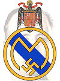

Plantilla:Efemérides - 6 de marzo
De:
La Frikipedia
, la enciclopedia
extremadamente
seria.

1902
- Fundación del
Real Madrid
Club de
farsantes
furbo
.
1927
- Nace el escritor
colombiano
Gabriel García Márquez,
premio nobel
de Literatura en 1982, y autor, entre otras obras, de
"Cien años del Forever Alone"
.
1937
- Nace
Valentina Tereshkova
, primera
mujer
astronauta
de la historia, la misma que impuso el lema:
"La nave no se limpiará sola"
.
1973
- Mueren 65 personas en los carnavales de
Río de Janeiro
, el veredícto oficial fue: "Demasiado Party Hard" (obviamente dicho en
portugués
).
Autor(es):
Gñapero Solitario
Frikipedia 2005-2016, Licencia
GFDL 1.2
- Extraído por FrikiLeaks
 De: La Frikipedia, la enciclopedia extremadamente seria. De: La Frikipedia, la enciclopedia extremadamente seria.
De: La Frikipedia, la enciclopedia extremadamente seria. De: La Frikipedia, la enciclopedia extremadamente seria.